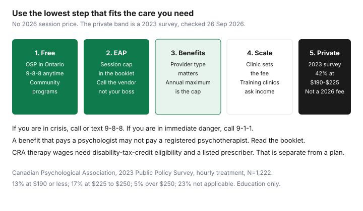

Healthcare · Canada
Affordable Therapy in Canada: Free, Sliding-Scale and Benefit-Covered Options Before You Pay $200 an Hour
If you need to talk to someone now, call or text 9-8-8. The Suicide Crisis Helpline is open 24 hours a day, every day. If your safety is at risk, call 9-1-1. The rest of this page is about money: which counselling is free, which is an employee benefit, and which receipt might be a medical expense. It is education, not a diagnosis, not a treatment plan, and not tax advice.
Private therapy is often the last step, not the first quote. Ontario Structured Psychotherapy is free for adults with depression or anxiety-related concerns. An employee assistance program is a set of sessions in a booklet. A workplace health plan pays some professions and not others, up to a maximum. A training clinic sets a lower fee because a student is supervised. A private hourly fee is whatever that clinician charges. No 2026 national fee schedule was opened. The only dated hourly band on this page is the Canadian Psychological Association’s 2023 practitioner survey. The title’s “$200 an hour” sits inside the largest band in that survey. It is not a quote for a session this year.
Key takeaways
- Call or text 9-8-8 for a suicide crisis, any time. Call 9-1-1 if you are in immediate danger. OHIP does not, on the pages opened here, pay routine private therapy the way it pays a physician visit.
- Ontario Structured Psychotherapy is free cognitive behavioural therapy and related supports for people 18 and older with depression or anxiety-related concerns. A doctor can refer you. In some areas you can refer yourself. An assessment decides the level of care.
- Use an employee assistance program by calling the vendor in the booklet, not by asking a manager for permission. The session count is the cap. What the manager is told should be in the vendor’s confidentiality statement. Read it.
- A plan that pays a psychologist may not pay a registered psychotherapist or a social worker. Match the registration on the receipt to the booklet before you book eight sessions.
- CRA’s “therapy” medical expense is narrow: wages for therapy for a person who is eligible for the disability tax credit, prescribed and supervised by a listed practitioner. A counselling fee can still be a medical service if that profession is authorized in your province. Check the list. The 2023 survey is not a 2026 price.
Publicly funded options: community mental health, Ontario Structured Psychotherapy, crisis lines
Start with the no-fee door. 9-8-8 answers calls and texts. It is not a waiting list for weekly therapy, and it is not a substitute for emergency services. Ontario’s mental-health services page also points people to community services. Those programs vary by city. The practical step is the local listing on ontario.ca, or the regional network, not a national “free therapist” promise.
Ontario Structured Psychotherapy is the program with a province-wide description. Ontario’s page says people 18 and older can get confidential cognitive behavioural therapy and other services free of charge. Each person is assessed by a trained mental health professional. Depending on need, the match can be self-led resources guided by a coach, group therapy with a clinician, or individual therapy with a clinician, in person or virtual. A physician, nurse practitioner, or other health professional can refer. In some areas you can refer yourself. The regional lead organization is who you ask about self-referral where you live. Ontario Health’s program page describes the same offer as free, publicly funded cognitive behavioural therapy for adults with depression or anxiety-related concerns, including phone coaching, clinician-assisted bibliotherapy with a workbook and weekly 30-minute sessions, and internet-based modules guided by a therapist. You have to do the readings between sessions. The program is coordinated by 10 networks. A self-referral form is not an appointment tomorrow. One regional site, opened only as an illustration of waits and not as a provincial standard, told people in its catchment to expect contact within eight to ten weeks. Ask your own network for its wait. Do not treat that one region’s wait as Ontario’s.
Is therapy covered by OHIP? A physician visit for a mental-health concern can be an insured medical service. A course of private counselling from a psychologist, social worker, or psychotherapist was not listed as an OHIP-insured service on the pages opened for this draft. Ontario Structured Psychotherapy is a funded program. It is not the same sentence as “OHIP pays any therapist you choose.” If a clinic says the next session is private, ask what the public option was and why it does not fit, and get that in writing if you are also trying to use a benefit plan.
Workplace EAPs: what they cover and how to use them confidentially
An employee assistance program is a contract your employer buys. The session count, the problems it will book, and whether family members are included are in that contract, not in a national standard. This page did not open a survey of how many sessions Canadian employers buy, so it does not print “most plans cover three” or any other count. Open the booklet or the wallet card and read the number that applies to you.
Confidential use means you call the vendor, not your supervisor. The vendor’s intake asks what you need so it can book a clinician. Your manager does not need the topic in order for you to attend. What the employer receives is usually a usage report that is not supposed to name you. “Usually” is not your contract. Read the confidentiality section before you call, and ask the intake worker what is reported back. Do not use a work email if the booklet gives a phone line, and do not put the session on a shared calendar with a clinician’s full name if that is avoidable. If the employer is also the insurer on a disability claim, keep the assistance program and the claim file separate in your own notes. The disability-insurance guide is about income replacement, not about counselling notes.
Use the sessions for the problem you have, and ask at the first call what happens when the cap is reached. A warm handoff to Ontario Structured Psychotherapy, a community program, or a benefit-covered clinician is more useful than discovering the cap on the day of the last session. If you are in crisis, do not wait for the assistance program’s next business-day callback. Use 9-8-8 or 9-1-1.
Stretching benefits: psychologist vs social worker vs registered psychotherapist coverage
Benefit plans pay a named profession, up to a dollar maximum, sometimes with a per-visit cap. A psychologist, a registered social worker, and a registered psychotherapist can all be the right clinician and still be three different lines in the booklet. Book the profession the plan pays, unless the clinical need is a profession the plan does not pay and you have decided to pay cash. Ask for the registration title that will appear on the receipt before the first session. A receipt that says “counsellor” with no registration the plan recognizes is how a claim comes back.
If you and a spouse both have plans, the order of claims is coordination, not a second full maximum stacked by wish. The coordination guide is the method. Send the first plan the receipt, wait for the explanation of benefits, then send the second plan the unpaid part, inside that plan’s deadline. A per-visit cap on the first plan does not disappear because the second plan exists. An annual maximum that resets in January is a reason to schedule a block of care while both maximums still have room, not a reason to use care you do not need.
A health spending account, if your employer offers one, can pay a clinician the health plan excludes, inside the account’s rules and deadline. How to elect and spend that account is the employer-benefits guide. Do not confuse it with a United States health savings account. If neither plan nor the account will pay, you are on the cash steps below, and the gap-insurance guide is where an individual policy is weighed against paying the clinician. Many individual policies pay less counselling than people expect. Read the maximum before you pay a premium to “cover therapy.”
Sliding-scale clinics, university training clinics and group programs
A sliding scale means the clinic sets a fee from your income, or from a posted range, instead of one full private rate. No provincial law opened for this draft forces a single scale, so this page does not print “sliding scale means $40.” Ask the clinic for the range, what proof of income they want, and whether the reduced fee is the full session or a short intake. A fee that is reduced only for the first visit is not a scale.
University training clinics charge less because a student delivers the care under supervision. The trade-off is the calendar: semesters end, the student changes, and the wait can be long. Ask who the supervisor is, whether sessions are recorded, and what happens to your file when the student leaves. Group programs, including groups inside Ontario Structured Psychotherapy, spread one clinician across several people. That is appropriate for some problems and wrong for others. The assessment is supposed to make that match. If you are offered a group and you need individual care, say so at the assessment rather than attending a group you will leave.
Community mental-health agencies sometimes mix free groups and a small fee for a longer individual block. Get the fee before you are on the list. A surprise invoice after a “free program” is a reason to pause and ask which organization is billing.
Tax: when therapy counts for the medical expense credit (verify provider eligibility)
Two different CRA rules get collapsed into “therapy is deductible.” They are not the same.
The line labelled therapy on the medical-expense list is the salary and wages paid for therapy given to a person who is eligible for the disability tax credit. The person giving the therapy cannot be your spouse or common-law partner and must be 18 or older when paid. The therapy has to be prescribed and supervised by a psychologist, a medical doctor, or a nurse practitioner, for a mental impairment, for expenses incurred after 7 September 2017. For a physical impairment the prescriber is an occupational therapist, a medical doctor, or a nurse practitioner, for expenses after that same date. The list’s columns for that row are: eligible, prescription needed, certification in writing not needed, Form T2201 needed. If the person is not eligible for the disability tax credit, this particular row does not open. The credit itself is an application. It is not assumed because someone is in therapy.
Separately, amounts paid to an authorized medical practitioner for medical services can be eligible medical expenses. The CRA list of authorized practitioners is a province-by-province table, updated on the page opened here with details dated 22 January 2026. The first screen of that table did not include the psychologist or psychotherapist rows. The latest-changes note on the same page says a registered social service worker has been authorized in Ontario since 30 December 2017, and a behaviour analyst since 1 July 2024. Filter the full table for your province and the exact profession on the receipt. A benefit plan can pay a profession the CRA table does not list, and the CRA table can list a profession your plan does not pay. Those are two tests. You claim only the part that was not reimbursed, unless the reimbursement is included in your income. The threshold and the rest of the household credit list are on the tax-credits guide. Confirm the claim with the CRA or a tax preparer you choose. This page is not a filing position.
A cost-per-session planning table
Plan the year as a ladder, and stop on the first step that actually provides the care. A free program with a four-month wait is not “free this week” if you need help this week. In that week, 9-8-8 and a crisis service are the immediate step, and the assistance program or a private session is the bridge, not a failure of the public system. Write the session limit and the dollar maximum in the last two columns from your booklet. The private column uses the 2023 survey because no later national fee guide was opened.
| Step | Cost basis | Access | Wait | Source |
|---|---|---|---|---|
| Crisis line | No fee stated. Call or text 9-8-8. | 24 hours a day, every day. 9-1-1 if safety is at risk. | It is a helpline, not a weekly therapy slot. | 988.ca, opened 26 Sep 2026. |
| Ontario Structured Psychotherapy | Free of charge, as Ontario and Ontario Health describe it. | Age 18 and older, depression or anxiety-related concerns. Referral, or self-referral where the network allows it. | An assessment comes first. One regional site described an eight-to-ten-week contact. Ask your network. | ontario.ca mental-health services page, and Ontario Health’s program page. Opened 26 Sep 2026. |
| Other public and community programs | Often no fee. Confirm. Some charge for a longer block. | Local eligibility. Not one national door. | Local. Not printed here. | Your public-health or community-agency page. Not invented. |
| Employee assistance program | No per-session fee inside the cap. The cap is the contract. | Employees, and sometimes family, as the booklet says. Call the vendor. | The vendor’s booking time. Not a provincial figure. | Your booklet. No national session count was opened. |
| Benefit-covered clinician | Plan pays the profession it names, up to the maximum and any per-visit cap. You pay the rest. | Whoever is registered as the profession the plan lists, and who is taking clients. | That clinician’s wait, plus claim deadlines. | The plan booklet. CRA’s authorized-practitioner list is a separate test. |
| Sliding scale or training clinic | The clinic’s scale or student fee. No provincial amount was opened. | Income questions, semester calendars, supervision. | Often longer than a private office. Ask. | The clinic. Do not use a forum’s fee. |
| Full private | 2023 survey of practitioners: 13 percent at $190 an hour or less, 42 percent at $190 to $225, 17 percent at $225 to $250, 5 percent over $250, 23 percent not applicable. N=1,222. | Whoever you hire, if you can pay. | That practice’s wait. | Canadian Psychological Association, Every Number Tells a Story, 2023 Public Policy Survey Results. |

Sources & date stamps
- 9-8-8 Suicide Crisis Helpline, 988.ca. Call or text, 24 hours a day. Call 9-1-1 if safety is at risk. Opened 26 Sep 2026.
- Ontario, Find mental health and addiction services. Ontario Structured Psychotherapy: age 18 and older, free cognitive behavioural therapy and other services, referral paths, self-referral in some areas. Opened 26 Sep 2026.
- Ontario Health, Ontario Structured Psychotherapy program page. Free publicly funded cognitive behavioural therapy, formats including 30-minute bibliotherapy sessions, 10 networks. Opened 26 Sep 2026.
- CRA, lines 33099 and 33199, and the therapy detail. Disability tax credit eligibility, prescriber rules after 7 September 2017. Opened 26 Sep 2026.
- CRA, RC4065 Medical Expenses, and the authorized medical practitioners list, page details 22 January 2026. Province table. Ontario social service worker note effective 30 December 2017. Behaviour analyst effective 1 July 2024.
- Canadian Psychological Association, 2023 Public Policy Survey Results. Hourly treatment rates, N=1,222. Not a 2026 fee schedule.
Frequently asked questions
Is therapy covered by OHIP?
A physician visit can be an insured medical service. Private counselling from a psychologist, social worker, or psychotherapist was not listed as an OHIP-insured benefit on the pages opened for this guide. Ontario Structured Psychotherapy is a free public program for eligible adults, and it is not a promise that OHIP pays any therapist you choose. If you are in crisis, call or text 9-8-8, or call 9-1-1 if you are in danger.
What is Ontario Structured Psychotherapy?
It is free, publicly funded cognitive behavioural therapy and related supports for people 18 and older with depression or anxiety-related concerns. An assessment matches you to coaching, a group, or individual care, in person or virtual. A physician, nurse practitioner, or other professional can refer you, and some networks allow self-referral. Ask the network where you live about the wait, and plan to do the readings between sessions.
How do I use my EAP confidentially?
Call the vendor named in the booklet, not your manager. Read the confidentiality section so you know what is reported back to the employer. The session count is whatever your contract says, and this guide does not guess a national number. If you are in crisis, do not wait for the next business-day callback: use 9-8-8, or 9-1-1 if you are in danger.
Does my plan cover a psychotherapist or social worker?
Only if the booklet names that profession. A psychologist, a registered social worker, and a registered psychotherapist are different lines, and a receipt that does not match the line comes back unpaid. Check the registration title before you book. The CRA’s authorized-practitioner list is a separate, province-by-province test.
Can therapy be claimed as a medical expense?
The CRA row called therapy is wages for therapy for someone eligible for the disability tax credit, prescribed and supervised by a listed practitioner. The person providing the therapy cannot be your spouse or common-law partner and must be 18 or older. Amounts paid to an authorized medical practitioner can be a different eligible expense if that profession is on the list for your province. Claim only the unreimbursed part, and confirm the profession before you file.